Sube niveles de héroes junto con oro. Se farmea en Resource Instance.
Glosario de progreso
Materiales
Registro de recursos importantes, para qué sirven y dónde se consiguen. La wiki separa datos confirmados por jugador, datos observados en capturas y puntos pendientes de completar.
Confirmado
Observado
Pendiente
Prioridad diaria
Materiales que más bloquean progreso
Rompe límites de nivel en 20, 40, 60, 80, 100 y luego cada 10 niveles.
Mejoran gear y estrellas de equipo. Útiles para subir poder estable.
Mejora diales, una rama separada de gear y weapon.
Héroes
Nivel, límites y potencial

EXP Pass
Material de experiencia usado junto con oro para subir niveles de héroes.
ConfirmadoResource Instance

Breakthrough Pass
Permite subir límites de nivel en topes: 20, 40, 60, 80, 100 y luego cada 10.
ConfirmadoResource Instance
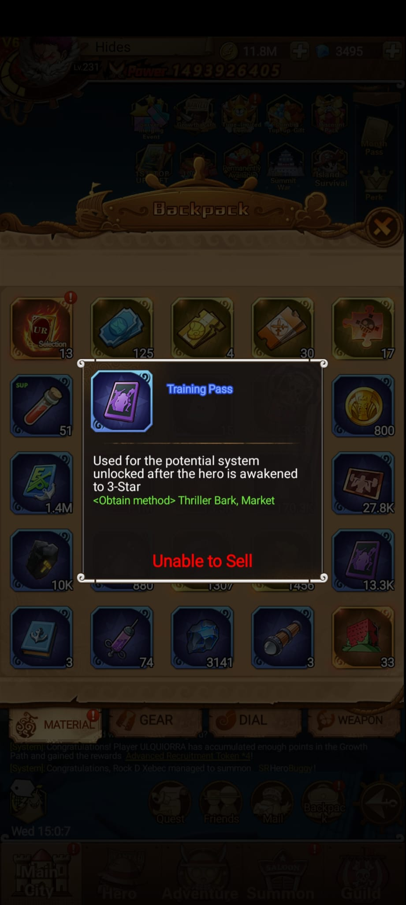
Training Pass
Usado en Potential, desbloqueado después de despertar el héroe a 3 estrellas.
ObservadoThriller BarkMarket
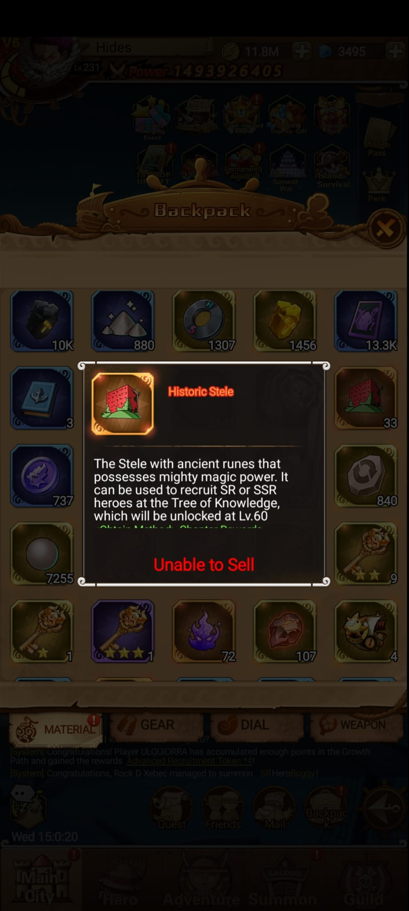
Historic Stele
Sirve para reclutar héroes SR o SSR en Tree of Knowledge, desbloqueado en Lv.60.
ObservadoTree of Knowledge
Gear, weapon y dial
Materiales de mejora

Enhance Stone
Material de mejora de gear.
ObservadoEnhance Stone InstanceMarket

Refine Stone
Material de subida de estrellas de gear.
ObservadoGear Instance

Forge Stone
Material de mejora de weapon.
ObservadoZ Forge Stone InstanceEnemy Incoming
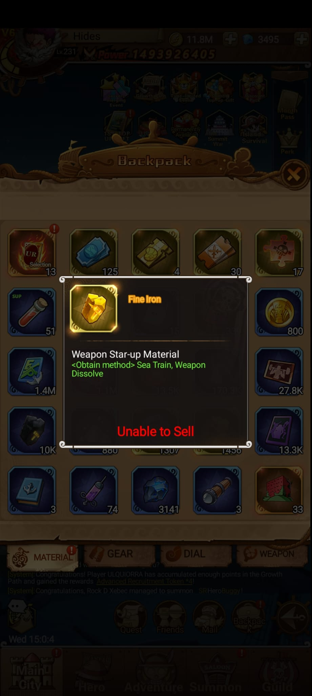
Fine Iron
Material de subida de estrellas de weapon.
ObservadoSea TrainWeapon dissolve

Crystal Dust
Material esencial para mejorar diales.
ObservadoCrystal Dust InstanceEnemy Incoming
Finishing Move
Remates
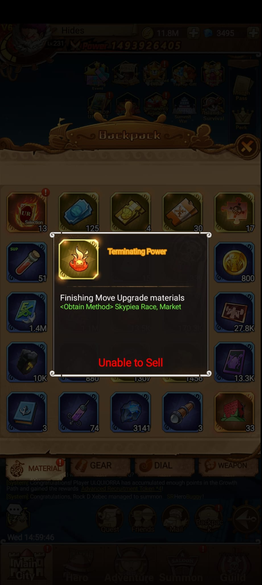
Terminating Power
Material de upgrade para Finishing Move.
ObservadoSkypiea RaceMarket
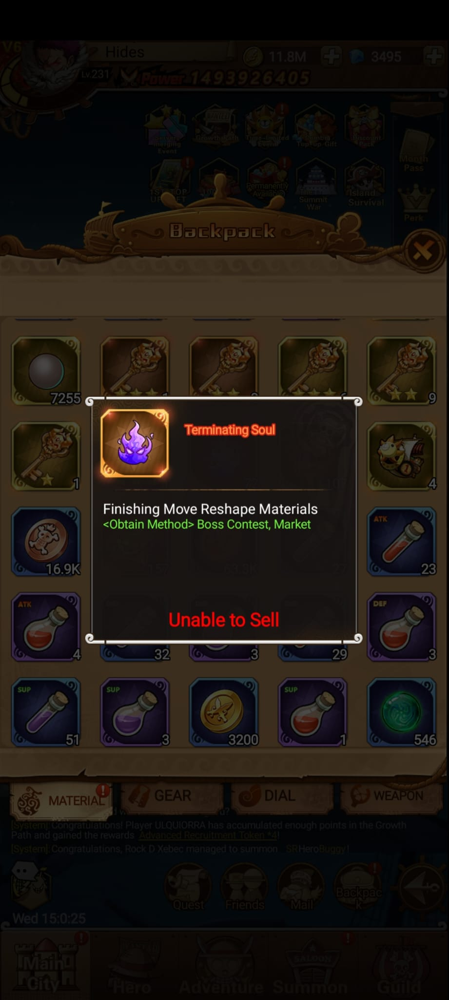
Terminating Soul
Material de Reshape para Finishing Move.
ObservadoBoss ContestMarket
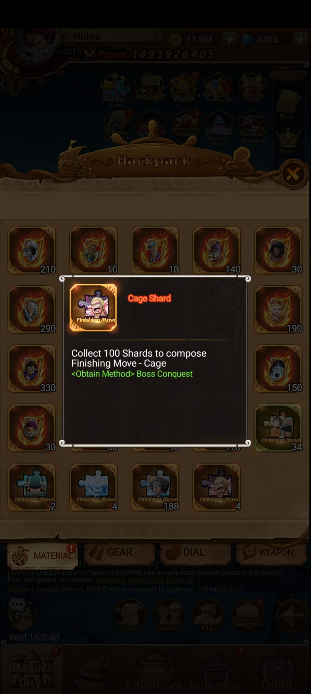
Cage Shard
Junta 100 shards para componer el Finishing Move Cage.
ObservadoBoss Conquest
Compass y Haki
Materiales especiales
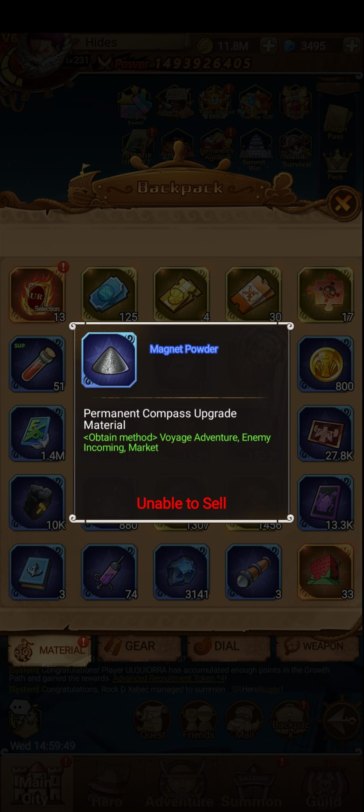
Magnet Powder
Material de mejora permanente de Compass.
ObservadoVoyage AdventureEnemy IncomingMarket
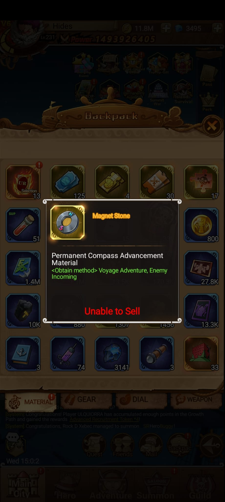
Magnet Stone
Material de avance permanente de Compass.
ObservadoVoyage AdventureEnemy Incoming
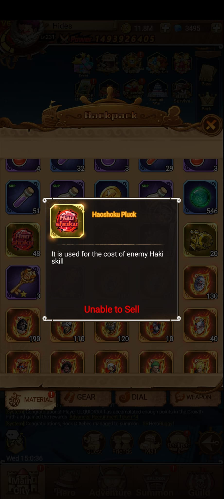
Haoshoku Pluck
Coste para habilidades Haki de enemigos.
ObservadoHaki Training Room
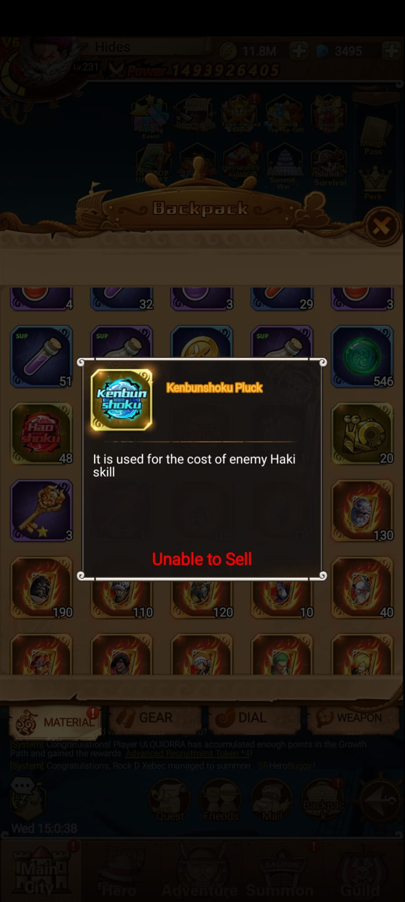
Kenbunshoku Pluck
Coste para habilidades Haki de enemigos.
ObservadoHaki Training Room
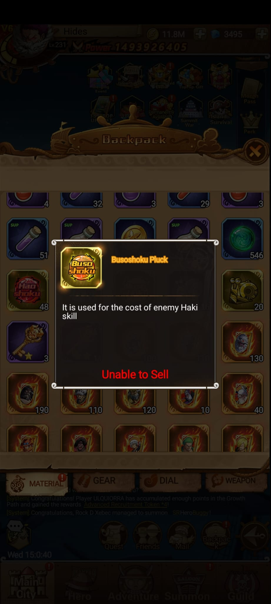
Busoshoku Pluck
Coste para habilidades Haki de enemigos.
ObservadoHaki Training Room
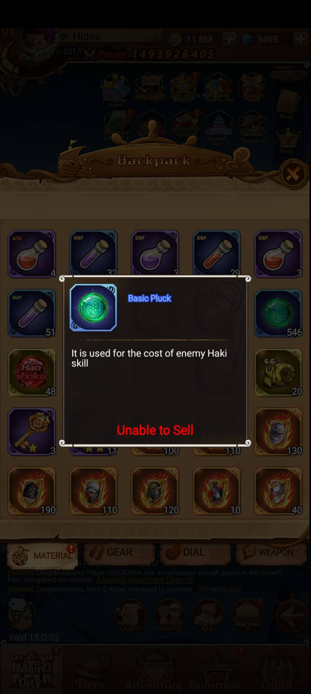
Basic Pluck
Coste para habilidades Haki de enemigos.
ObservadoHaki Training Room
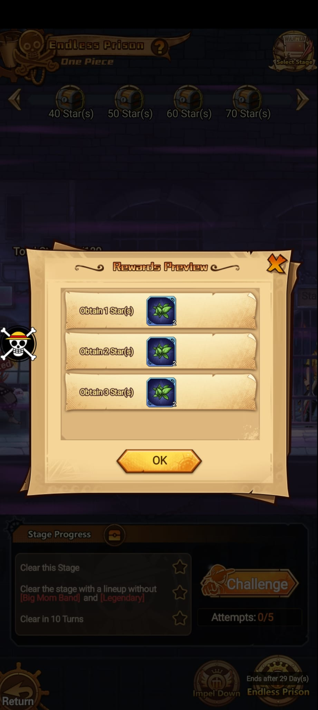
Medicine Herb
Planta usada en Potion Crafting de Vegapunk's Lab. Endless Prison empieza en nivel de usuario 220 y da Medicine Herb x2 por objetivo de estrella.
ObservadoEndless PrisonVegapunk's LabUnable to Sell
Pendiente
Datos pendientes para cerrar el glosario
Prioridad real
Falta ordenar materiales por importancia según etapa: early, mid y late game.
Costes por nivel
Falta tabla de cuánto EXP, oro y Breakthrough pide cada tramo de héroe.
Fuentes exactas
Falta confirmar todas las tiendas, eventos y modos donde aparece cada material.